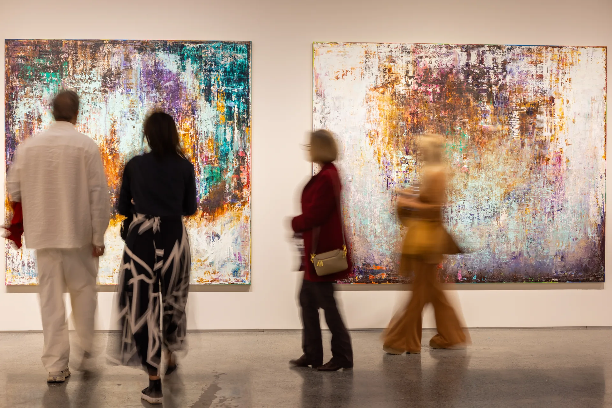
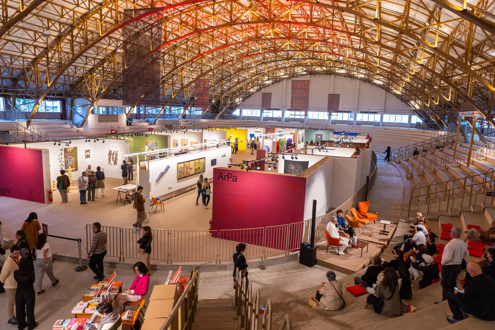
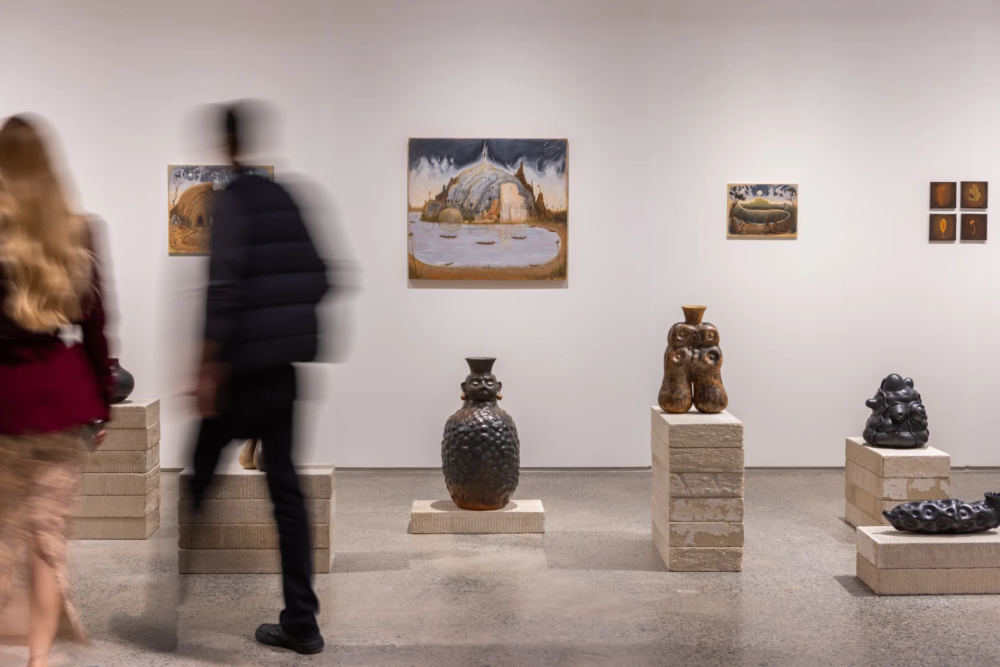
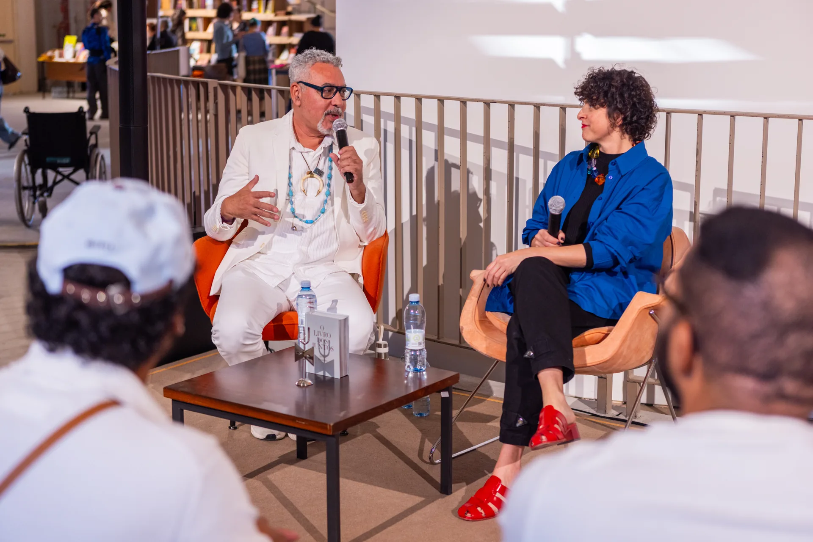
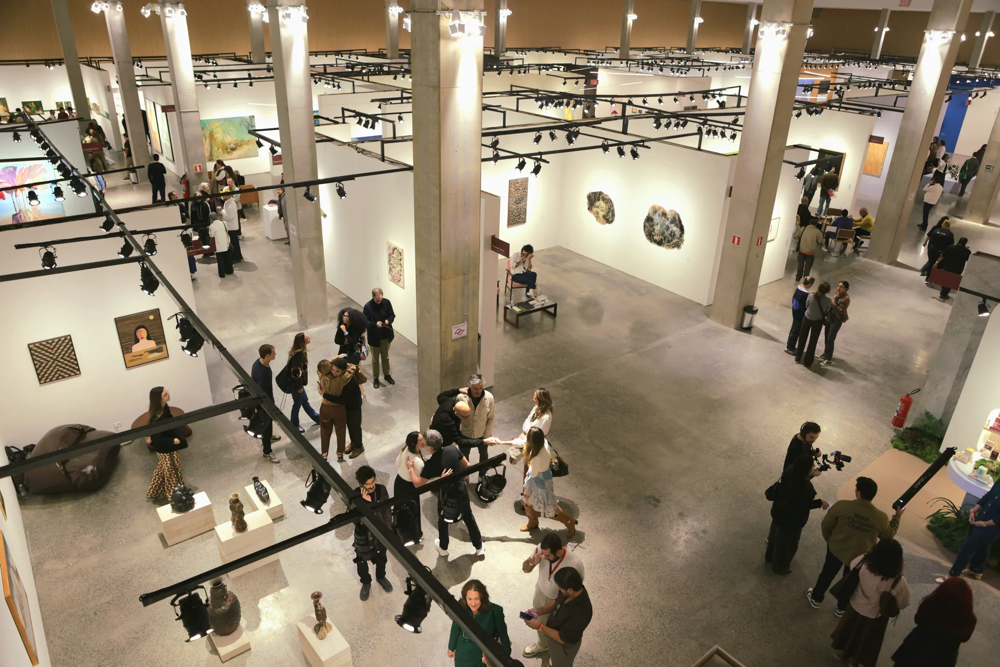
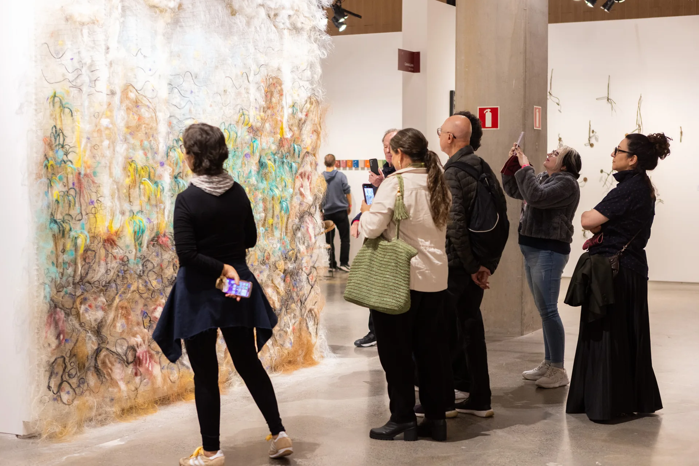

Programa Prisma
Visitas a ateliês, coleções privadas e exposições aproximam colecionadores, curadores, artistas e profissionais do circuito.
Desde 2022, a ArPa aproxima galerias, artistas, colecionadores, instituições e novos públicos por meio de uma feira curada, acolhedora, em profundidade e conectada à América Latina.

01 / A ArPa
A ArPa nasceu para propor uma nova experiência de feira, mais atenta e menos ansiosa, proporcionando encontros de maior qualidade.
Em uma escala cuidadosamente pensada, cada projeto ganha contexto, cada artista pode ser visto em profundidade e o público circula por pequenas exposições dentro da feira.
Fundada em 2022 por Camilla Barella, a partir de uma demanda do setor por uma nova plataforma relevante em São Paulo.
“A abordagem curatorial cria um ambiente mais atento ao diálogo entre obras, pesquisas, artistas e diferentes públicos.”
Camilla Barella · fundadora e diretora da ArPa

02 / Modelo curado
A seleção, a expografia e o tempo de permanência são partes do mesmo projeto institucional.

Galerias escolhidas pela direção com apoio de um comitê de conteúdo.
Propostas concebidas especialmente para cada edição e para o contexto da feira.
Número limitado de artistas por estande para preservar profundidade, diálogo e fruição.
Resultados 2026
O balanço mais recente traduz a escala alcançada sem perder a precisão curatorial.
Fonte: balanço institucional da edição 2026.
03 / Setores
Cinco perspectivas complementares constroem uma feira plural, conectando mercado, pesquisa, formação e acesso.
01 / 05
Reúne um grupo relevante e diverso de galerias, as quais contribuem de maneira construtiva e ativa para a comunidade artística.
Selecione um setor para explorar04 / Além da feira
A ArPa fortalece relações no tempo — antes, durante e depois dos dias de feira.
Visitas a ateliês, coleções privadas e exposições aproximam colecionadores, curadores, artistas e profissionais do circuito.
Visitas temáticas, ações com escolas públicas e oficinas ampliam o acesso e prolongam a experiência.
Comunicação, formação de público e encontros mantêm o ecossistema em movimento durante todo o ano.
05 / Fomento
A feira transforma visibilidade em continuidade para artistas, galerias, instituições e acervos públicos.

Descentralização
Reconhece artistas fora do eixo Rio–São Paulo e de periferias urbanas, ampliando a visibilidade de diferentes territórios.
Excelência curatorial
Valoriza propostas de destaque pela coerência expográfica, curatorial e intelectual.
Acervo público
Em parceria com o ICCo, incorpora ao museu obras de artistas ainda não representados em sua coleção.
06 / Territórios
A ArPa escolhe lugares que carregam memória e pertencimento, conectando ecossistemas da arte na América Latina.

Origem
Mercado Livre Arena Pacaembu
A feira anual e seu ecossistema de galerias, instituições e públicos.Programação futura
16–20 de setembro de 2026 · Casa Victoria Ocampo
Uma experiência intimista e curada com cerca de 20 galerias latino-americanas.
07 / Parcerias
Depois de cinco edições, a ArPa prepara sua 6ª edição em São Paulo e aprofunda sua presença latino-americana. Marcas podem criar contexto por meio de ativações, conteúdo, programas socioculturais e experiências exclusivas.
Construir uma parceria